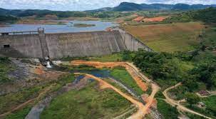
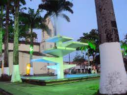
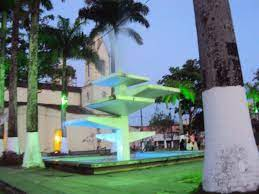

Esses São alguns pontos turísticos da da Cidade
Existem locais tradicionais de visitação pública, que são marcos históricos de fundação da cidade, a exemplo do casarão do Engenho Verde (1841) [onde nasceu o romancista e teatrólogo Hermilo Borba Filho[8]]; o antigo Cemitério Paroquial (1861) com a capela do Bom Jesus dos Martírios; a Estação Ferroviária (1862); a casa-grande do Engenho Paul (1863); a Catedral de Nossa Senhora da Conceição (1873) padroeira local; o Clube Literário dos Palmares (1881), hoje Biblioteca Pública Municipal; a ponte de ferro sobre o rio Pirangy (1882), construída pelos engenheiros ingleses da Great Western; a Loja Maçônica Fraternidade Palmarense Nº 01 (1932) que foi a pioneira no Estado de Pernambuco, dentre outros atrativos de igual importância para os amantes da história e das tradições socioculturais interioranas.
Barragem Cerro Azul
Fotos de Alguns Pontos
 
